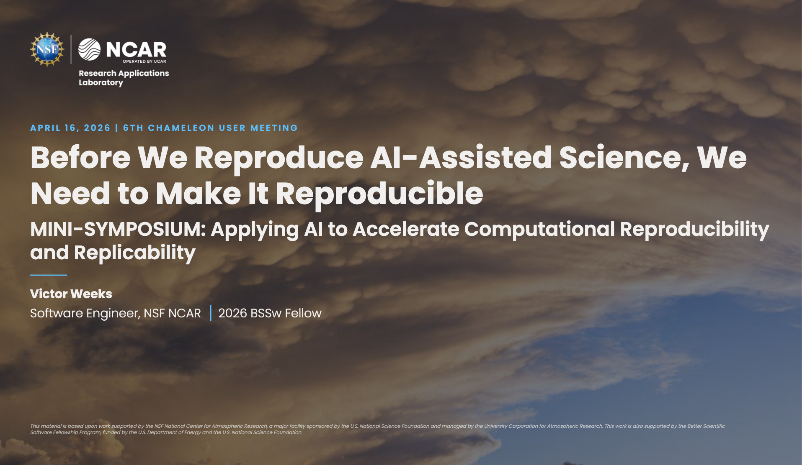

Maintaining Reproducibility in AI-Assisted Scientific Software
Development
A Build-Side View of R&R
Victor Weeks
Software Engineer, NSF NCAR
2026 BSSw Fellow
Mini-Symposium: Applying AI to
Accelerate Computational Reproducibility and Replicability
This material is based upon work supported by the NSF National
Center for Atmospheric Research, a major facility sponsored by the
U.S. National Science Foundation and managed by the University
Corporation for Atmospheric Research. This work is also supported
by the Better Scientific Software Fellowship Program, funded by
the U.S. Department of Energy and the U.S. National Science
Foundation.
vweeks.github.io/mini-symposium-deck/
This Symposium
AI as adaptive infrastructure for
reproducing artifacts.
Rebuild software environments
Resolve dependency conflicts
Navigate testbed quirks
Help the community reproduce a given artifact.
The Mirror Question
When AI helps build that artifact — can the
author still reproduce the author?
AI writes the code
AI configures the experiment
AI picks the tech stack
Same coin. Different direction.
A high-level look back — roughly the last couple of years.
Tab-complete
A high-level look back — roughly the last couple of years.
Console copy/paste
Tab-complete
A high-level look back — roughly the last couple of years.
MCP & tool use
Console copy/paste
Tab-complete
A high-level look back — roughly the last couple of years.
Planning mode
MCP & tool use
Console copy/paste
Tab-complete
A high-level look back — roughly the last couple of years.
Autonomous agent teams
Planning mode
MCP & tool use
Console copy/paste
Tab-complete
Not a ladder. Month-to-month, not year-to-year.
First reveal.js presentation.
First time with multiplex.
AI didn't just find these tools — it built the
template, wired the multiplex broker, suggested the layouts.
And there's a scrap pile behind it.
1streveal.js deck
1stmultiplex run
Ndrafts scrapped

Slides
Wrong choice →
aesthetic debt.
Science
Wrong choice →
corrupted results that
still pass CI.
The gap isn't "explain the AI" — it's
trace what the AI chose for you.
One spoke. Now the hub.
A Validation-Focused Methodology
Applying Agentic Engineering1 to
scientific software →
Scientific Agentic Engineering
Validation Loops
Domain checks at each decision point — units, conservation,
precision, provenance.
Human-in-the-Loop Oversight
Review gates at decisions that matter. Not everywhere.